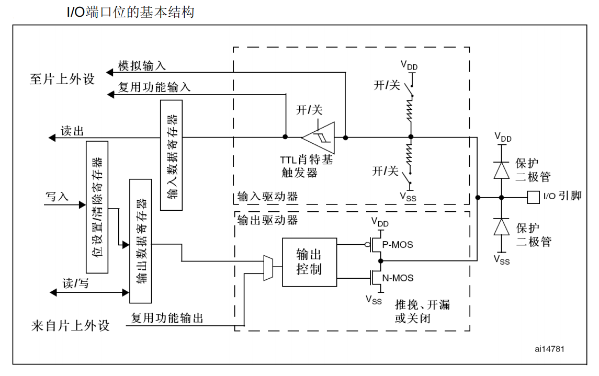
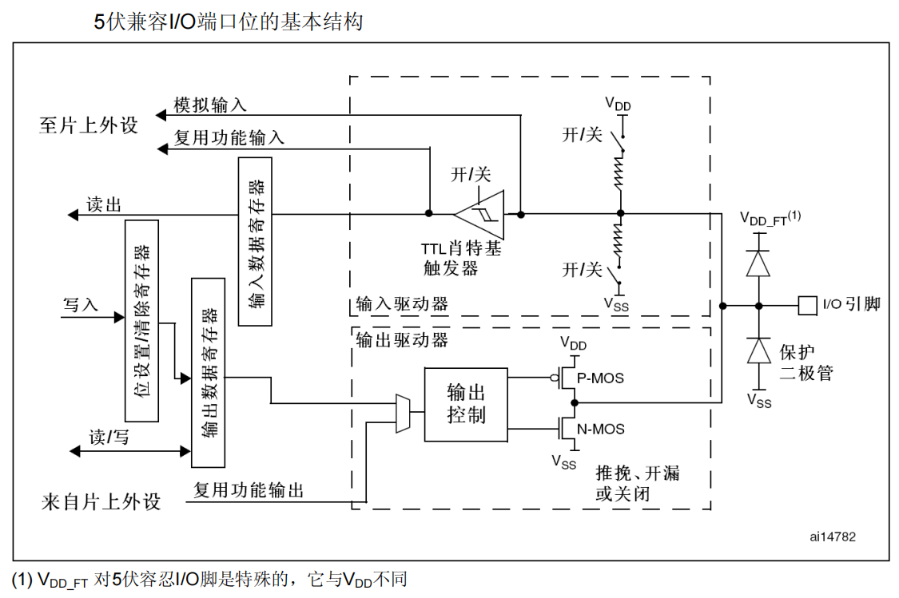
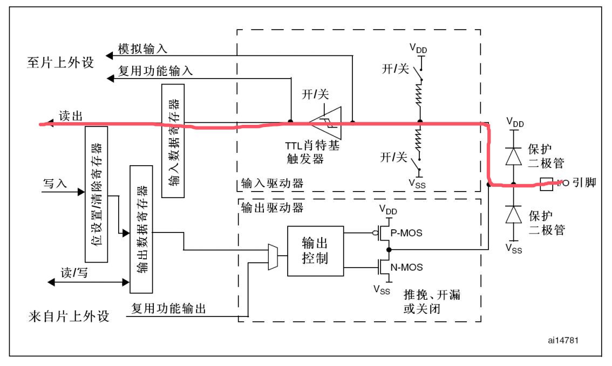
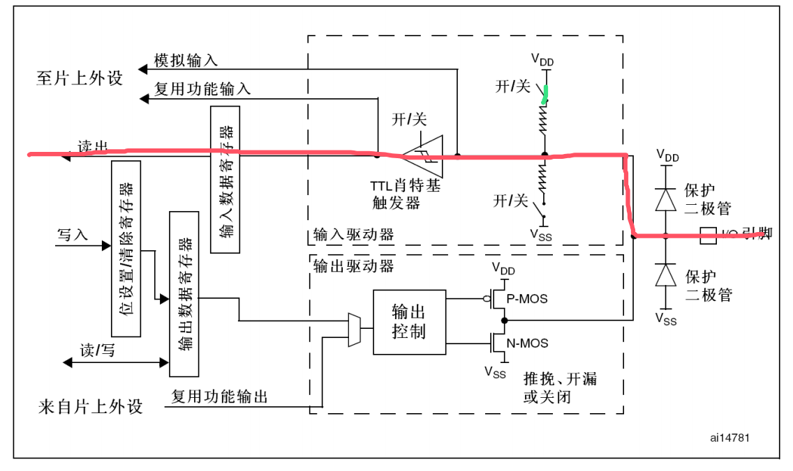
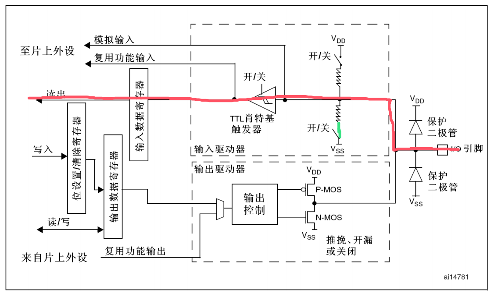
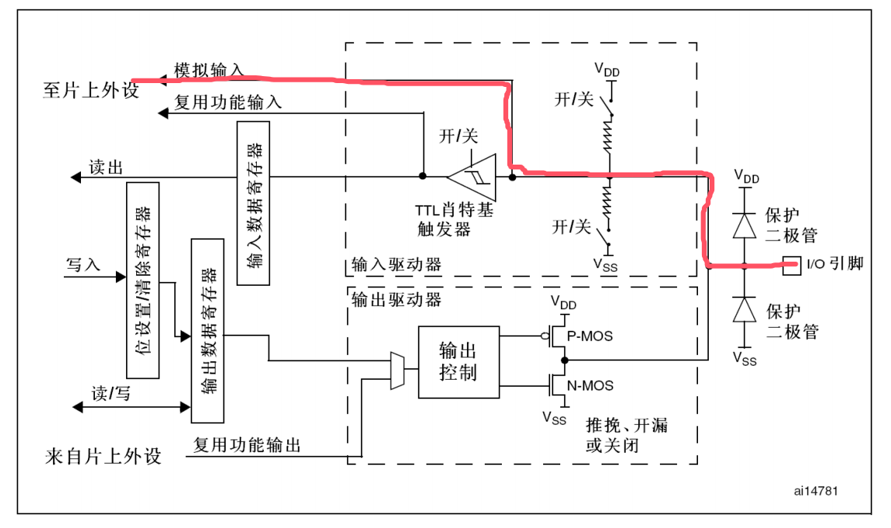
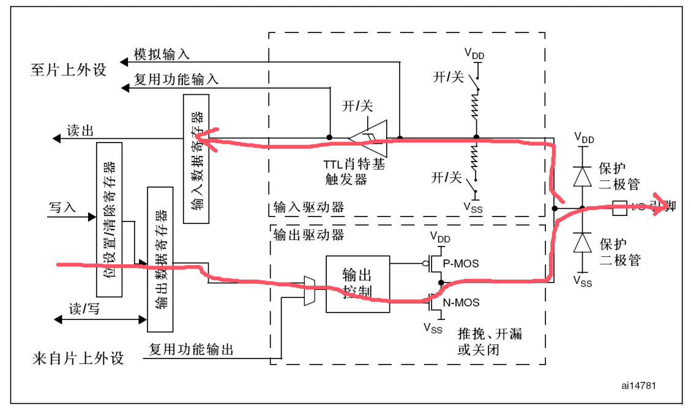
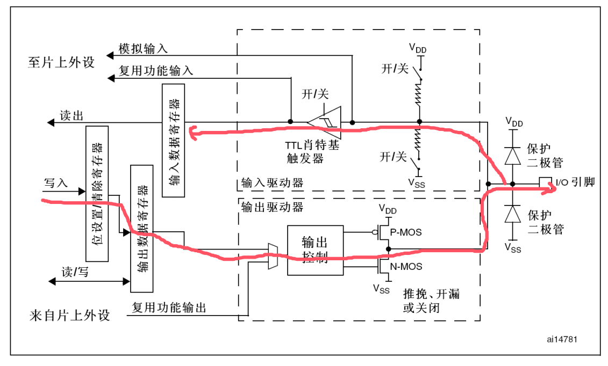
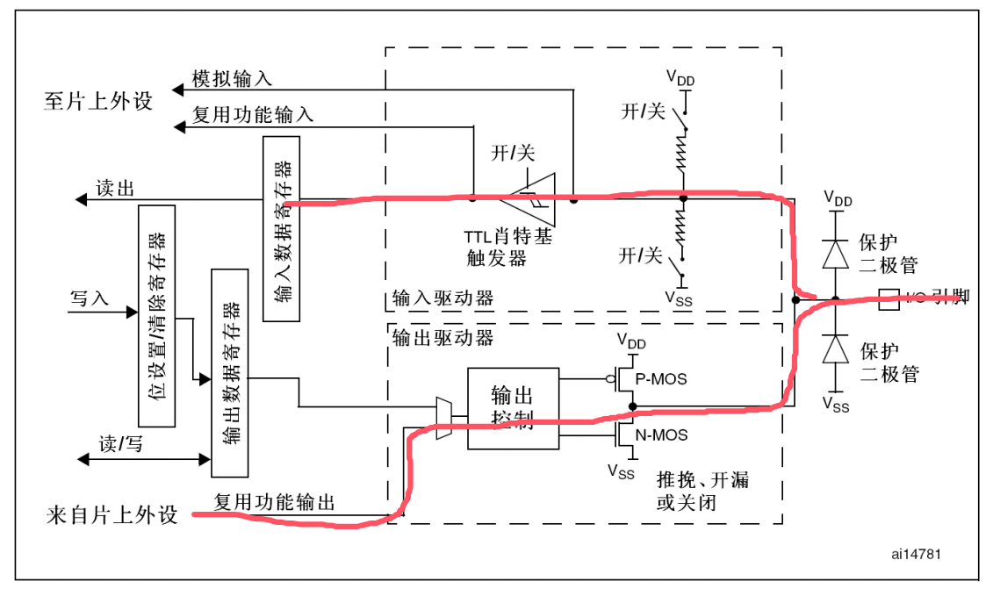

GPIO
01. GPIO简介
GPIO（General Purpose Input Output）通用输入输出口
可配置为8种输入输出模式
引脚电平：0V~3.3V，部分引脚可容忍5V
输出模式下可控制端口输出高低电平，用以驱动LED、控制蜂鸣器、模拟通信协议输出时序等
输入模式下可读取端口的高低电平或电压，用于读取按键输入、外接模块电平信号输入、ADC电压采集、模拟通信协议接收数据等
每个GPI/O端口有两个32位配置寄存器(GPIOx_CRL，GPIOx_CRH)，两个32位数据寄存器(GPIOx_IDR和GPIOx_ODR)，一个32位置位/复位寄存器(GPIOx_BSRR)，一个16位复位寄存器(GPIOx_BRR)和一个32位锁定寄存器(GPIOx_LCKR)。
根据数据手册中列出的每个I/O端口的特定硬件特征， GPIO端口的每个位可以由软件分别配置成多种模式。
输入浮空
输入上拉
输入下拉
模拟输入
开漏输出
推挽式输出
推挽式复用功能
开漏复用功能
每个I/O端口位可以自由编程，然而I/0端口寄存器必须按32位字被访问(不允许半字或字节访问)。GPIOx_BSRR和GPIOx_BRR寄存器允许对任何GPIO寄存器的读/更改的独立访问；这样，在读和更改访问之间产生IRQ时不会发生危险。
02. GPIO系统结构

03. GPIO位结构
 施密特触发器是一种波形整形电路，具有滞后特性，能防止噪声干扰。
04. GPIO模式
通过配置GPIO的端口配置寄存器，端口可以配置成以下8种模式
| 模式名称 | 性质 | 特征 |
|---|---|---|
| 浮空输入 | 数字输入 | 可读取引脚电平，若引脚悬空，则电平不确定 |
| 上拉输入 | 数字输入 | 可读取引脚电平，内部连接上拉电阻，悬空时默认高电平 |
| 下拉输入 | 数字输入 | 可读取引脚电平，内部连接下拉电阻，悬空时 |
| 模拟输入 | 模拟输入 | GPIO无效，引脚直接接入内部ADC |
| 开漏输出 | 数字输出 | 可输出引脚电平，高电平为高阻态，低电平接VSS |
| 推挽输出 | 数字输出 | 可输出引脚电平，高电平接VDD，低电平接VSS |
| 复用开漏输出 | 数字输出 | 由片上外设控制，高电平为高阻态，低电平接VSS |
| 服用推挽输出 | 数字输出 | 由片上外设控制，高电平接VDD，低电平接VSS |
4种输入模式：
- 输入浮空
- 输入上拉
- 输入下拉
- 模拟输入
4种输出模式：
- 开漏输出
- 开漏复用功能
- 推挽式输出
- 推挽式复用功能
3种最大翻转速度：
- 最大输出速度为2MHz
- 最大输出速度为10MHz
- 最大输出速度为50MHz
4.1 输入浮空
浮空输入模式下，I/O端口的电平信号直接进入数据寄存器。也就是说，I/O的电平状态是不确定的，完全由外部输入决定；如果在该引脚悬空（在无信号输入）的情况下，读取该端口的电平是不确定的。所以在要读取外部信号时通常配置IO口为浮空输入模式。
4.2 输入上拉
上拉输入模式下，I/O端口的电平信号直接进入输入数据寄存器。但是在I/O端口悬空（在无信号输入）的情况下，输入端的电平可以保持在高电平；并且在I/O端口输入为低电平的时候，输入端的电平为低电平。
4.3 输入下拉
下拉输入模式下，IO口工作方式刚好和上拉模式相反。I/O端口的电平信号直接进入输入数据寄存器。但是在I/O端口悬空（在无信号输入）的情况下，输入端的电平可以保持在低电平；并且在I/O端口输入为高电平的时候，输入端为高电平。
4.4 模拟输入
模拟输入模式下，I/O端口的模拟信号（电压信号，而非电平信号）直接模拟输入到片上外设模块，比如ADC模块等等。
4.5 开漏输出
开漏输出模式下，通过设置位设置/清除寄存器或者输出数据寄存器的值，控制MOS管的导通。这里要注意N-MOS管，当设置输出的值为高电平的时候，N-MOS管处于关闭状态，此时I/O端口的电平就不会由输出的高低电平决定，而是由I/O端口外部的上拉或者下拉决定；当设置输出的值为低电平的时候，N-MOS管处于开启状态，此时I/O端口的电平就是低电平。同时，I/O端口的电平也可以通过输入电路进行读取；注意，I/O端口的电平不一定是输出的电平。通常使用开漏输出时外部要加一个上拉电阻。
4.6 开漏复用功能
开漏复用输出模式，与开漏输出模式很是类似。只是输出的高低电平的来源，不是让CPU直接写输出数据寄存器，取而代之利用片上外设模块的复用功能输出来决定的。
4.7 推挽式输出
推挽输出模式下，通过设置位设置/清除寄存器或者输出数据寄存器的值，控制P-MOS管和N-MOS管的导通来控制IO口输出高电平还是低电平。这里要注意P-MOS管和N-MOS管，当设置输出的值为1的时候，P-MOS管处于开启状态，N-MOS管处于关闭状态，此时I/O端口的电平就由P-MOS管决定为高电平；当设置输出的值为0的时候，P-MOS管处于关闭状态，N-MOS管处于开启状态，此时I/O端口的电平就由N-MOS管决定为低电平。同时，I/O端口的电平也可以通过输入电路进行读取；注意，此时I/O端口的电平一定是输出的电平。
4.8 推挽式复用功能
推挽复用输出模式，与推挽输出模式很是类似。只是输出的高低电平的来源，不是让CPU直接写输出数据寄存器，取而代之利用片上外设模块的复用功能输出来决定的。
